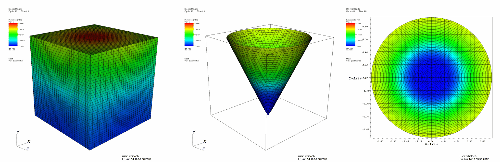

Like the Slice operator, the Cone operator is also a slice operator. The Cone operator slices a 3D database with a cone, creating a surface that can be left in 3D or be projected to 2D. Plots to which the Cone operator has been applied become surfaces that exist on the surface of the specified cone. The resulting plot can be left in 3D space or it can be projected to 2D space where other operations can be done to it. A Pseudocolor plot to which a Cone operator has been applied is shown in figure.
|  |
| Figure 18 |